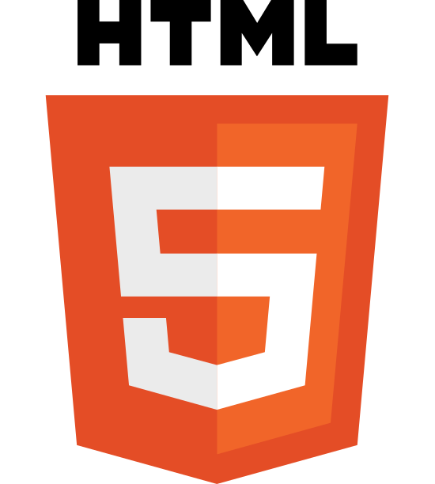
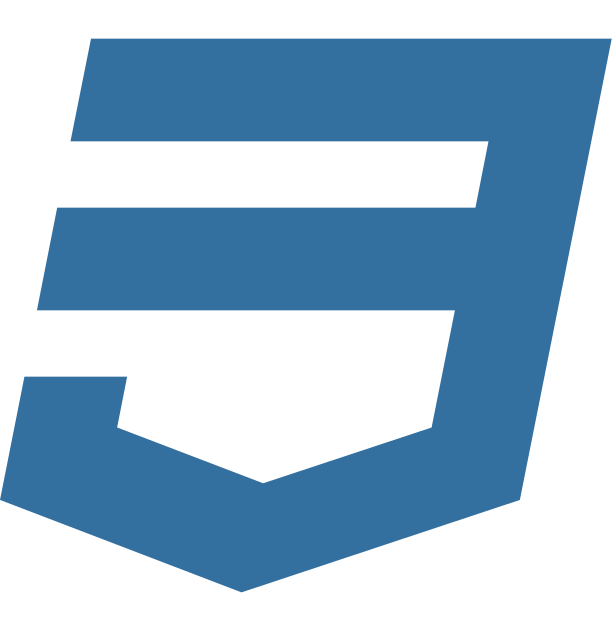
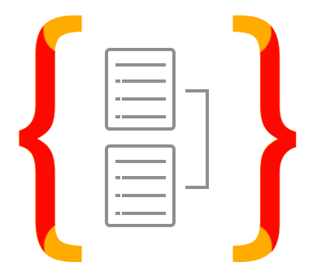
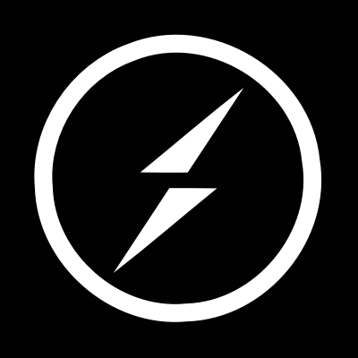
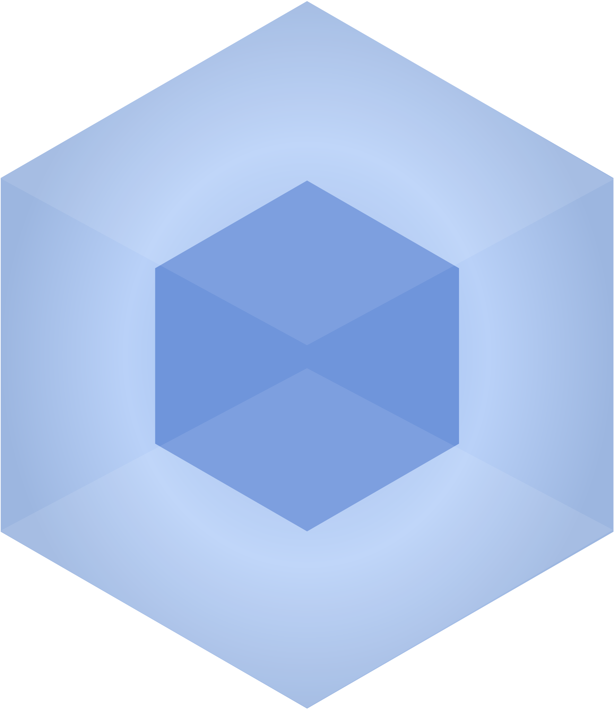
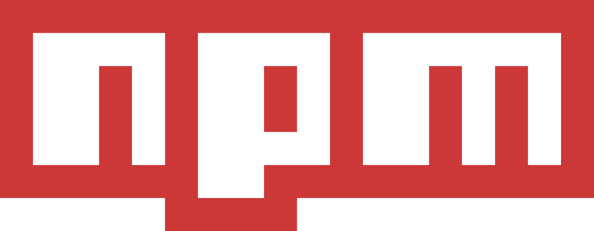
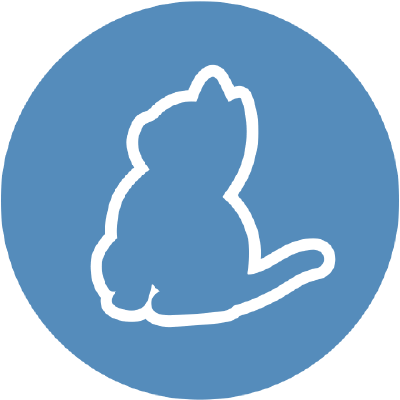

What I work with















A web-based crowdsourced commute-routing application. It aims to be an avenue for the Filipino people to learn commute routes and share the ones that they know.
Web app that helps facilitate our organization's quiz contest, Get 1/4!, in keeping scores and adding visual effects.
Client project for managing booked ads in various stores, each with different aisles and advertisement types.
Web app laid out for mobile that helps keep track of scores of players during a table-tennis tournament.
Email: tadeolinco@gmail.com
Mobile: +63965 220 9315